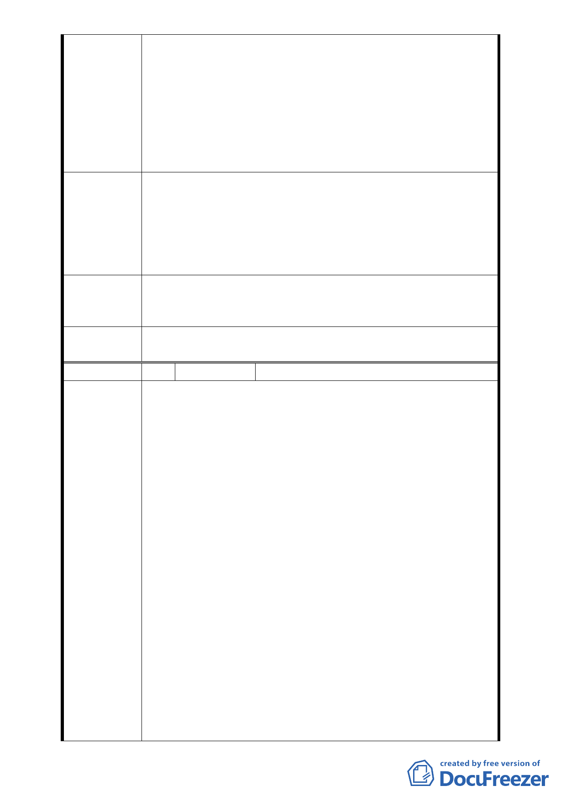

新單元的事情，我們大部分的人都不知道，也不了
解，結果案子就到了都委會，現在我們花了這麼多
時間寫陳情信、意願書、申請書，結果…這種結果
跟之前不是一樣，看起來，臺北市政府比達欣開發
還過份，之前達欣開發問我們，我們不積極參與，
現在我們積極參與，結果，還是一樣的結果，差別
只在，達欣開發漠視消極的居民，臺北市政府漠視
積極的居民，如此而已。
自始至終我們都不相信，臺北市政府完全不理會
周邊居民想參與都更的心聲，希望市政府的大官員們
建
議
辦
法
切身的了解我們的想法，我們的陳情信，我們的意願
書，我們的申請書，我們實際參與，卻無法發言的都
委會，天理昭昭，請都委會建立自己的專業和良知，
不要讓都委會被人民瞧不起，請勿再漠視人民的發言。
99.12.3 專
案 小 組 結 同編號1
論
委
員
會決
議
同編號
1
編 號 3. 陳情人 達新開發股份有限公司
1. 本公司受陳瑞雅君委託申請劃定之「劃定臺北市大
安區龍泉段一小段 421-1 地號等 8 筆土地更新單
元」案，前於 98 年 6 月 30 日貴會地 595 次委員會
列為討論事項第六條，該次會議紀錄詳錄「一、請
更新處函詢國有財產局於 98 年 1 月 10 日後對本案
國有土地之處理意向；另本更新單元南側土地所有
權人陳情納入更新單元，請更新處主動處理鄰地協
調事宜。二、本案公有土地地上物為日式宿舍，請
市府邀集都委會委員、土地管理單位、使用單位及
文化局辦理現場會勘後再討論更新單元範圍之劃
陳 情 理 由 定。」，僅先敘明。
2. 嗣經都市更新處依前揭 595 次委員會議決議，於
98 年 10 月 13 日貴會第 601 次委員會提案「『劃定
臺北市大安區龍泉段一小段 421-1 地號等 8 筆土地
為更新單元』案，依本會第 595 次會議決議之辦理
情形，報請公鑒」，都市更新處於會上就上開 595
次委員會議事項報告處理情形，針對國有土地國產
局無公辦意願及本案地上物非文化古蹟進行說
明，並報告本案申請人與鄰地協調仍無共識外，並
就另二個陳請案之範圍及居民意願進行報告。惟於
報告後，部分委員指出有關都市更新處報告之鄰地
- 22 -